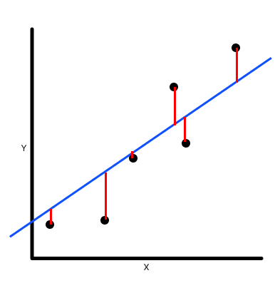

Fall 2025
Generalization Ability of Neural Networks
Final project & presentation for a topics course on the powerful machinery and techniques associated with Gaussian distributions. Based on a paper of Koltchinskii and Panchenko, the talk develops uniform bounds on the generalization error of classifiers in terms of the so-called Gaussian complexity of an underlying class of functions.
Read the notes (PDF)